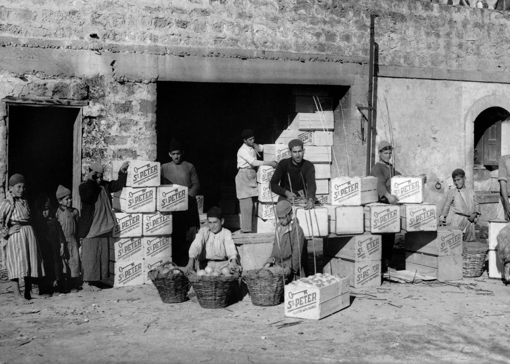
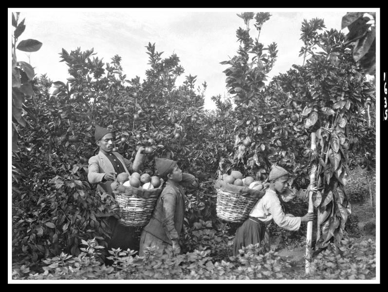
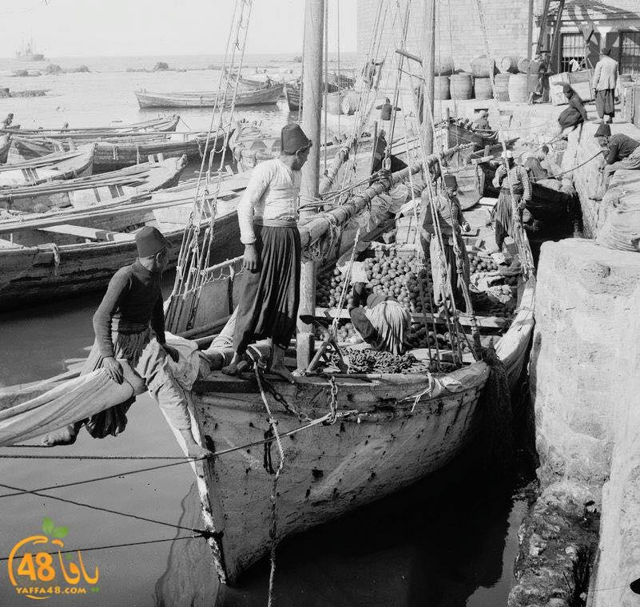

.jpg)
لماذا يافا؟
تعتبر مدينة يافا من اجمل المدن الفلسطينية من أقدم وأهم مدن فلسطين التاريخية. تقع اليوم ضمن على الساحل الشرقي للبحر الأبيض المتوسط - حسب. وتبعد عن القدس بحوالي 55 كيلومتر إلى الغرب.كانت لفترة طويلة تحتل مكانة هامة بين المدن الفلسطينية الكبرى من حيث المساحة وعدد السكان والموقع الإستراتيجي، حتى تاريخ وقوع النكبة عام 1948، وتهجير معظم أهلها العرب. يسكنها اليوم قرابة 60,000 نسمة معظمهم من اليهود، وأقلية عربية من المسلمين والمسيحيين.
تحتل مدينة يافا موقعًا طبيعيًّا متميزًا على الساحل الشرقي للبحر الأبيض المتوسط عند التقاء دائرة عرض 32.3ْ شمالًا وخط طول 34.17 شرقًا، وقد أسهمت العوامل الطبيعية في جعل هذا الموقع منيعًا يُشرف على طرق المواصلات والتجارة، وهي بذلك تعتبر إحدى
البوابات الغربية الفلسطينية، حيث يتم عبرها اتصال فلسطين بدول حوض البحر المتوسط وأوروبا وأفريقيا. ويُعتبر ميناؤها أحد أقدم الموانئ في العالم، حيث كان يخدم السفن منذ أكثر من 4000 عام. ولكن في 3 نوفمبر 1965 أغلق ميناء يافا أمام السفن الكبيرة، واستخدم ميناء أشدود بديلًا عنه،
وما زال الميناء يستقبل سُفن الصيد الصغيرة والقوارب السياحية. يجري في أراضي يافا الشمالية نهر العوجا على بعد 7 كم، وتمتدّ على جانبي النّهر بساتين الحمضيات التي جعلت من هذه البقعة متنزّهًا محليًا لسكّان يافا، يؤمونه في عطل نهايات الأسبوع وفي المناسبات والأعياد.
المسافة : 100 كم تقريباً
البدء : الساعة 8:00 صباحاً
التكلفة : 100 شيكل
السعر القديم : 150 شيكل السعر الجديد :
100 شيكل
ملاحظة : ملاحظة على الرحلة من الخليل إلى يافا: يُنصح بالانطلاق مبكرًا، والتأكد من حالة الطريق والحواجز قبل السفر، وتجهيز الهوية والوثائق اللازمة، مع إحضار الماء والطعام وارتداء ملابس مريحة للاستمتاع بالرحلة وزيارة معالم يافا الجميلة.
برنامج اليوم
| الوقت | المحطة | المدة |
| 9:00 صباحاً | مسجد المحمودية (مسجد بابا الكبير) | ساعة |
| 10:00 صباحاً | البلدة القديمة | ساعة |
| 11:00 صباحاً | سوق بابا القديم | ساعة |
| 12:00 ظهراً | برج الساعة | ساعة |
ابرز ما سنراه
-
1.الحياة الفلسطينية والتراث الشعبي
- التعرف على العائلات اليافية القديمة و حكايتها و ذاكرة المدينة .
- مشاهدة البيوت الفلسطينية القديمة و تفاصيل العمارة والأبواب والشبابيك .
- التعرف على تاريخ يافا كمركز تجاري وثقافي وزراعي ، خصوصاً شهرتها بالبرتقال اليافي .
- اكتشاف الحرف التقليدية والمهن القديمة التي ارتبطت بالميناء والأسواق .
- زيارة المعرض الفنية والمستقلة .
- اكتشاف الفنون الفلسطينية المعاصرة والتصوير الفوتوغرافي
- متابعة الفعاليات الثقافية والموسيقية والمسرحية .
- التعرف على المبادرات والجمعيات الثقافية التي تحافظ على الهوية الفلسطينية .
- حي المنشية : التعرف على تاريخ الحي الفلسطيني الذي كان من أهم أحياء يافا قبل النكبة .
- حي الجبلية : التعرف على الحياة السكنية والعائلات اليافية .
- شارع ييفت : مشاهدة المحلات والمخابز والمقاهي والحياة اليومية .
- اللقاء مع أهل يافا : الاستماع إلى قصص كبار السن عن المدينة واسواقها وبساتين البرتقال .
- صناعة وتصدير البرتقال اليافي إلى العالم .
- تاريخ الميناء و التجارة البحرية .
- المطابع والصحف الفلسطينية التي صدرت من يافا .
- صناعة الصابون والمنسوجات والحرف التقليدية .
- الحياة الاقتصادية والاجتماعية قبل نكبة 1948 .
2. الثقافة والفن والمجتمع
3. الحياة الاجتماعية والأحياء
4. التاريخ الاقتصادي والصناعي


